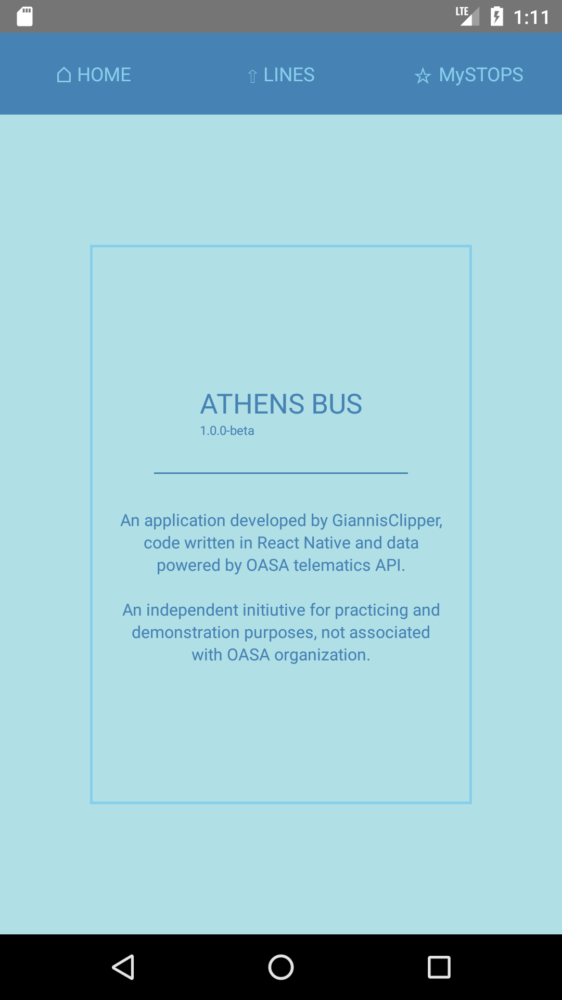
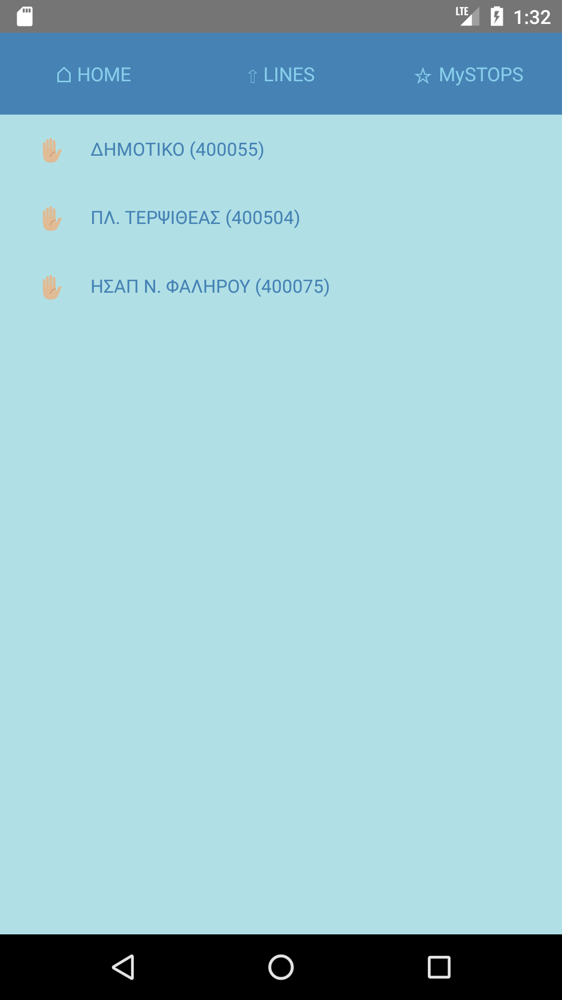

[ στα ελληνικά ]
Athens Bus App. (1.0.1-beta)

The subject of this mobile app is to inform about the expected arrivals at the bus stations of Athens.
App developed by GiannisClipper, code written in React Native and data powered by OASA telematics API.
It is an indypendent initiutive, not associated with transportation organization of Athens (OASA), for the purpose of practicing and demonstrate programming skills.

In the main menu of the app there are three choices:
The 'HOME' choice displays the home page with a small introductory text.
The 'LINES' choice displays lists with the bus lines, the routes per line, the stops per route and the expected arrivals per stop.
The choice 'MySTOPS' displays a list with the favourite stops defined by the user and the expected arrivals per favourite stop.

The choice 'LINES' displays the bus lines displayed in groups according to the first digit of their line ID or according to the search user may commit by typing a part of the line IDs or descriptions.
For each line is displayed the ID and the description, the blue color around the ID declares the bus lines while the yellow the trolley lines.

Subsequently responding to the user selections, may be displayed the routes of each line, the stops of each route and the expected arrivals of each stop.

In the list with expected arrivals at a bus stop there is a more specific menu.
The 'BACK' choice navigates to the previous screen while the 'MySTOP' choice is used to select or deselect the stop as favourite.
Furthermore in this list, the arrivals and the delay times are getting updated automatically every 20 seconds.

The 'MySTOPS' choice offers instand access to the stops that have been defined as favourites by the user as well as to the lists with the expected arrivals for each of them.